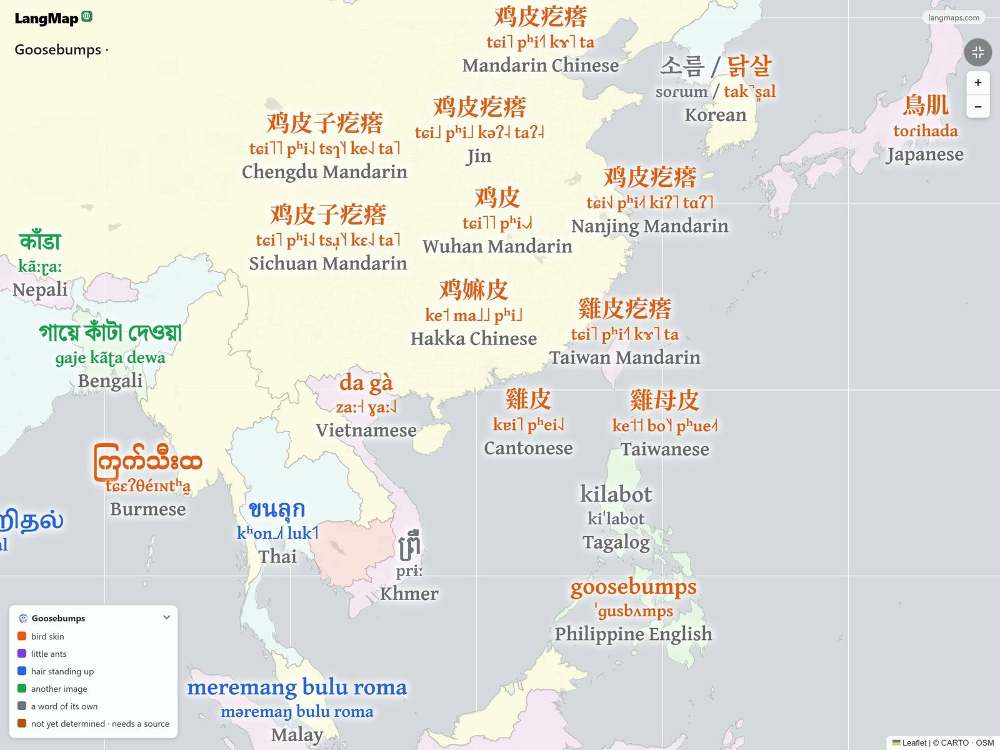

Sinosphere · · revised · Facebook post
Why does so much of the world call goosebumps "bird skin"?
- Japanese has a strange expression for goosebumps. It calls them "bird skin."
- Then you look next door, and the neighbors see poultry too.
- Then you look at Europe, and things start getting suspicious.

Contents
Bird skin, chicken skin
When you get cold, frightened or suddenly emotional, your skin rises into tiny bumps.
In Japanese, that is:
鳥肌 (torihada)
literally: "bird skin"
Fair enough.
A plucked bird does look a little like that.
Then Korean says:
닭살 (daksal)
"chicken skin / flesh"
Wait.
Chicken again?
Then Mandarin:
鸡皮疙瘩 / 雞皮疙瘩 (jīpí gēda)
literally: "chicken-skin bumps"
Now it is starting to look like a pattern.
And then Vietnamese:
da gà (Chữ Nôm: 𪾉𪃿)
"chicken skin"
At this point, four neighboring languages are all staring at goosebumps and seeing poultry.
| Language | Expression | Literal image |
|---|---|---|
| Japanese | 鳥肌 torihada | bird skin |
| Korean | 닭살 daksal | chicken skin / flesh |
| Mandarin | 鸡皮疙瘩 jīpí gēda | chicken-skin bumps |
| Vietnamese | da gà / 𪾉𪃿 | chicken skin |
The map shows the same bird inside China, too. Some varieties even specify the sex of the chicken:
Cantonese: 雞皮 (gai1 pei4), "chicken skin"
Taiwanese Hokkien: 雞母皮, "hen skin"
Hakka: 鸡嫲皮, "hen skin"
Korean, by the way, has two everyday words. Next to 닭살 stands 소름 (soreum), a native word with no bird in it at all.
So perhaps this is an East Asian expression.
Maybe it spread from one language to another.
That would make sense.
Except...
English does it too
goosebumps
A goose.
Seriously?
Cross into German:
Gänsehaut
literally: "goose skin"
Oh, come on.
French:
chair de poule
"hen flesh"
Spanish:
piel de gallina
"hen skin"
Italian:
pelle d'oca
"goose skin"
Dutch:
kippenvel
"chicken skin"
Hebrew even picks a third bird:
עור ברווז (or barvaz)
"duck skin"
At some point you have to ask:
Did everyone agree on this in advance?
Of course not.
And that is what makes it so satisfying.
Same body, same idea
These languages are not all closely related.
They did not all inherit one ancient word for goosebumps.
Some neighboring expressions may have influenced one another, but that cannot easily explain the whole pattern across East Asia and Europe.
The simpler explanation is sitting right on our arms.
Human skin covered in goosebumps really does resemble the skin of a plucked bird.
So different people, in different places, looked at the same physical phenomenon and independently reached for almost the same metaphor.
They just argued about which bird it was.
Japanese: bird
Chinese, Korean, Vietnamese: chicken
English, German, Italian: goose
French, Spanish, Dutch: hen / chicken
Hebrew: duck
Not everyone joins the bird club
Not every language sees a bird.
Arabic قشعريرة (qushaʿrīra) is a word of its own, describing the shivering sensation itself.
Thai ขนลุก (khon luk) literally means "hair rises."
Russian мурашки (murashki) means "little ants," from the crawling feeling on the skin.
But the bird is everywhere else.
Different languages.
Different continents.
Different histories.
And then, again:
bird skin.
Sometimes the most satisfying linguistic coincidences are not coincidences at all.
They are different people noticing the same thing.